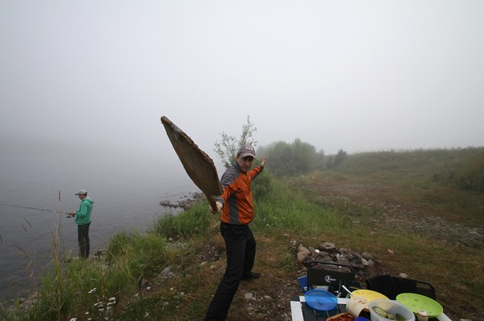
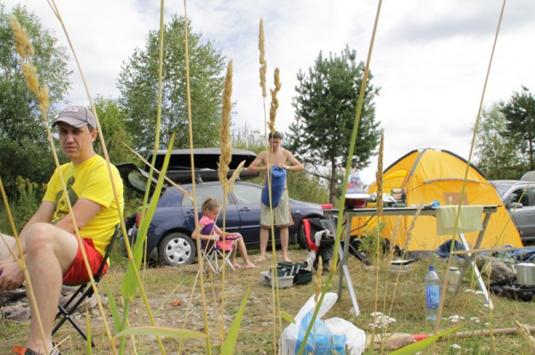
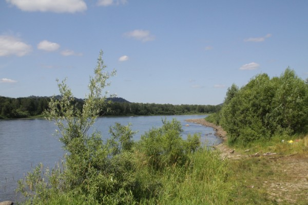
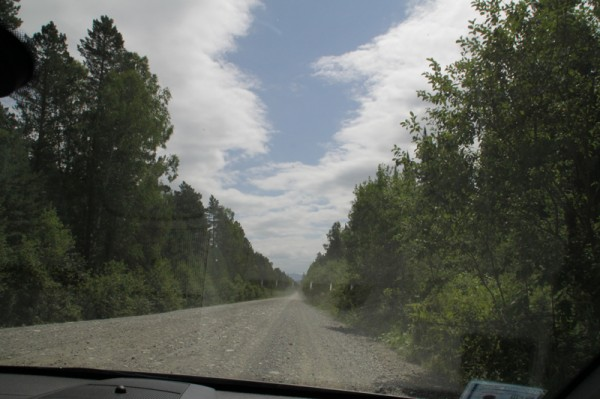

Последние дней 10 были наполнены разного рода перемещениями в географических координатах. Потихоньку пытаюсь перейти в размеренно-рабочий режим. В блоге получится зафиксировать события теперь уже похоже только с опозданием. Но лучше поздно, чем вообще некоторые всё в себе держат.
Итак, руководствуясь рекомендациями лучших мировых терапевтов, как и все прошлые годы пытаемся отдыхать там где живём. Чтобы без потрясения в часовых поясах, диетах и финансовом состоянии. Варианты для отдыха из Кемерова есть, кое-где даже уже отдыхали. В этом году решено было вновь (в третий вроде раз) съездить на выходные на Алтай.
Алтай большой, поэтому основной точкой выбрали озеро Телецкое, где до этого не были ни разу. Из Кемерова на двух машинах выехали в пятницу около шести часов вечера. Я еще успел сверстать газету и купить новую палатку. Палатка совершенно чумовая, но о ней в следующий раз.
До Горного Алтая из Кемерова люди едут в основном по трём дорогам. Самая старая дорога — через Кузедеево (ездили года три назад) — дорога в плохом состоянии. Есть еще новая дорога через Таштагол — по ней мы не ездили еще ни разу. Говорят именно до Телецкого там ближе всего, но асфальта нет. Поехали по самой длинной, но самой хорошей — через Барнаул.
На улице темнеть начало уже когда мы подъезжали к Бийску. Из Бийска до Телецкого можно добраться через Горноалтайск — дорога хорошая (именно по ней все и ездят) и по асфальтированной когда-то давно дороге вдоль Бии. Так как мы до Телецкого с самого начала решили не ехать за раз, то поехали именно по этой когда-то асфальтированной дороге. Думали отъедем от Бийска километров 100 и остановимся.
Отъехали километров 70. Бывший когда-то асфальт кончился вообще, а речки в темноте, к сожалению так и не было видно. Опустилась ночь и туман. До Телецкого нам оставалось еще километров 200, а дорога становилась всё хуже и хуже. На обочинах сидели ничего не подозревающие зайцы, один раз дорогу перебежала лиса. На протяжении более чем 100 километров нам встретился только один лесовоз. Думаю его водитель очень удивился. В некоторые моменты хотелось даже вернуться, но тяга к приключениям и лень двигали нас вперёд.
Ориентируясь под навигатору мы в одном месте даже подумали, что находимся очень близко к реке и съехали с дороги. Дальний свет фар выхватил из тумана пасущуюся лошадь, потом лошадь исчезла. Поперек дороги валялось поваленное дерево. Мы ехали дальше и заехали в какой-то карьер. До воды тогда так и не добрались, вернулись обратно на то, что когда-то было дорогой.
Очень не хватает для описания фотографий, но когда ты на очень легковой машине минимум в 120 километрах от асфальта в 2 часа ночи в ночи, тумане и там где-то зайцы и лошадь — про фотографии, к сожалению, в общем никто не подумал. Заехали в деревню. В деревне дома есть, а людей нет. Потом заехали еще в одну. Тут уже были люди (спали) и даже один легковой автомобиль (цивилизация). Было много спящих прямо на асфальте (да, на территории деревни был асфальт) коров.
Время шло, машины ехали, начинало светать. При свете кое-где уже начинала проглядывать река, и не доехав километров 10 до слияния рек Бия и Лебедь мы всё-же свернули с дороги и остановились на берегу. Разбили лагерь, поели кильку и спиртного, поймали щуку и легли спать.

Наутро я встал, даже окунулся в весьма прохладную Бию и сел на стул


Собрали палатки и выдвинулись дальше, только успели сфотографировать гравийку, как выехали на асфальт. Поверьте гравийка на фото, просто взлётная полоса по сравнению с тем где мы ехали ночью.

Мы подъезжали к слиянию р. Бия и р. Лебедь